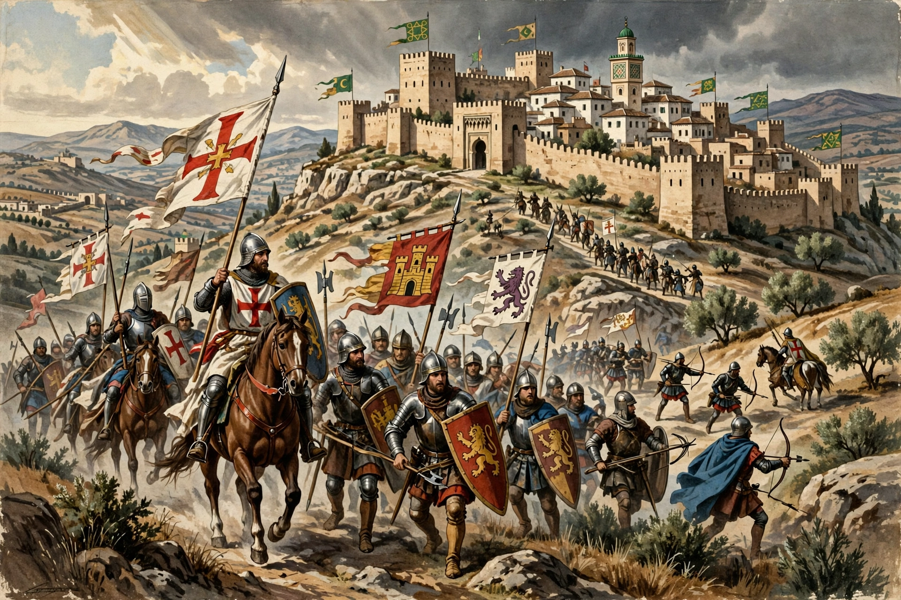

The Reconquista (Spanish and Portuguese for "reconquest") is the historiographical name for the roughly 780-year period (c. 722–1492) during which Christian kingdoms in the Iberian Peninsula expanded southward at the expense of Muslim al-Andalus, culminating in the fall of the Nasrid Emirate of Granada to Ferdinand and Isabella in 1492.

Traditionally dated from the Battle of Covadonga (c. 722), the process was intermittent, marked by shifting alliances that often crossed religious lines. Major turning points included the capture of Toledo (1085), the Christian victory at Las Navas de Tolosa (1212), and the conquests of Córdoba (1236) and Seville (1248). El Cid is its most famous — and ambiguous — hero. The era involved repopulation, crusading ideology, military orders, and periods of coexistence (convivencia) as well as persecution, ending with the expulsion of Jews in 1492 and later of Moriscos.
Modern scholars debate whether "Reconquista" reflects medieval reality or a later nationalist framing constructed in the 19th century.